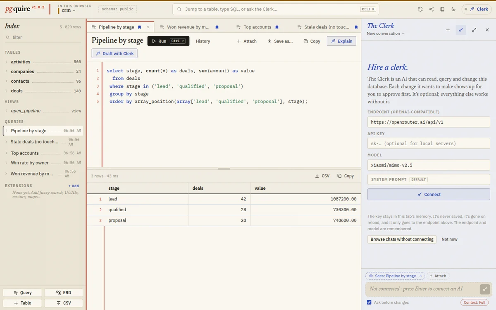

crm
A small CRM
A sales team's database: 24 companies, their contacts, 140 deals moving from lead to won or lost, and every call, email and demo along the way. The saved queries answer the questions a sales lead asks on Monday morning. Open the ERD to see how it fits together, or edit a deal and watch the pipeline change.
Tables
activities560 rowscompanies24 rowscontacts96 rowsdeals140 rows
Saved queries
- Pipeline by stage
- Won revenue by month
- Top accounts
- Stale deals (no touch in 30 days)
- Win rate by owner
Open in pgquire
53 KB of SQL in a 14 KB link